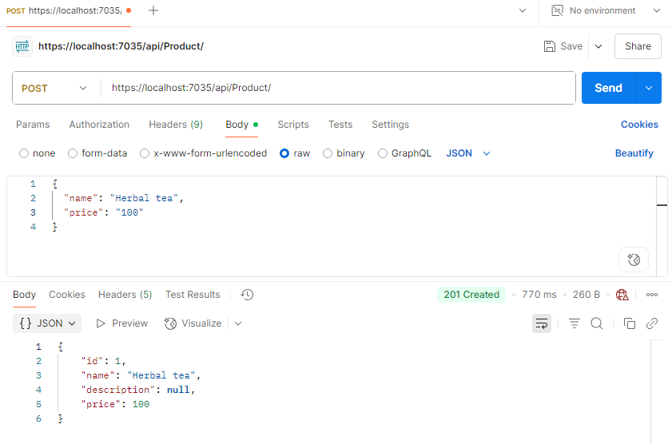

.NET basics
Components of .NET:
- Runtime -- executes applicaiton code
- Libraries -- provides utility functions
- Compiler -- compiles source code into (runtime) executable code
- SDK and other tools
- App stacks -- like ASP.NET core or Window Forms that enable writing apps
.NET is cross-platform
Write code once and run on any OS system.
.NET core runtime available on any OS. The compiler turn the source code into Intermediate Language (IL). IL intepreted at Runtime specific to OS
- 'clr.dll' on Windows
- 'libcoreclr.so' on Linux
- 'libcoreclr.dylib' on MacOS
We can also build a version of .NET included with Runtime. So even the target OS has no .NET, app still works
ASP.NET Core
Note: Using latest version: ASP.NET 9.0
ASP.NET Core is a cross-platform, high-performance framework for building modern web applications.
ASP.NET Core app structure
- MyWebApi/
- Controllers/
- WeatherForecastController.cs
- ProductController.cs
- Models/ (you create this)
- Product.cs
- Services/ (you create this)
- ProductService.cs
- Interfaces/ (you create this)
- IProductService.cs
- Program.cs
- appsettings.json
- Properties/
- launchSettings.json
- MyWebApi.csproj
- Controllers/
Program.cs
App entry point. This is where we the application start, also where we register services and config middleware
Controllers
This is where API endpoints live
A Controller is a C# class that handles incoming HttpRequest
appsetting.json
This is where we store configuration like Jwt, ConnectionString
Reading the configuration by using:
launchSettings.json
defines URLs and profiles for launch
MyWebApi.csproj
The project file, defines target .NET version, NuGet package references and output type
Models
Data classes (Entities), define the structure of data
get -- accessor allow to read on a private field
set -- accessor allow to write on a private field
Services and Interfaces
Services are classes that contain the business logic of the application. Interfaces define the contract (what methods a service must implement), allowing for better abstraction, testability, and loose coupling.
First we define an Interface
Then we implement it at Service class
Then register service on 'Program.cs'
To use service, inject the Interface.
Question: Why we inject the Interface, not the Service itself?
Answer: More flexible where we need to replace the service, loosen coupling, controller depends on contract class, not concrete one
Bad practice:
Define and implement Interface with asynchronous implementation
Ref: Create controller base API
First, define product interface
Then implement the interface with the service
In 'Program.cs', we register the interface in DI container
Basically, this line of code tells that anywhere calls IProductService, it will recieve ProductService
Now we can use the service in controllers through injecting its interface
Test the API with postman
First, try doing POST request
Then GET request (Note: Another product was added)
Handle API parameters with simple data types and validating data
Handle API Parameters
Route parameters: [FromRoute]
Used for parameters in URLs
Test with postman, passing parameter id=1
Try passing id = -1, the validation work and BadRequest response recieve
From Query String : [FromQuery]
Get the query from URL segment; ?name=tea, ?isDiscount=...
test with postman
From Body - JSON : [FromBody]
Used for POST or PUT, where the request is a JSON object.
Best practice: Use Data Transfer Object (DTO) since we do not want to expose the entire entity
For example, when adding product, we only want to add new product with name, the ID should be generated automatically.
Now the POST request only need Name field
Data Validation
We want to validate data before to check if there is something wrong, or missing, only proceed if the data is valid!
Mark controller with [ApiController] At the beginning
This enables automatic model validation using annotations.
Add Data annotations in ProductDto
Note: For better illustration, some fields of ProductEntity were added
Test again with postman
Try sending a body withoug name field, we get a response BadRequest
Can also catch details of mixed error